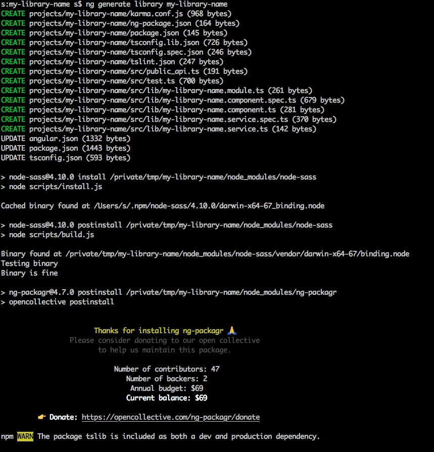

## Development
## reusable
## angular "components"
##### isolation code
##### component versions
##### sharing components between projects
##### quick ci
## individual repository
## for a individual "component"
ng new --create-application false my-library-name
$ cd my-library-name
$ tree -I node_modules
.
├── README.md
├── angular.json
├── package-lock.json
├── package.json
├── tsconfig.json
└── tslint.json
0 directories, 6 files
So, we created empty app, without app.module.ts
ng generate library my-library-name

$ tree -I node_modules
.
├── README.md
├── angular.json
├── package-lock.json
├── package.json
├── projects
│ └── my-library-name # - library name
│ ├── karma.conf.js
│ ├── ng-package.json
│ ├── package.json
│ ├── src
│ │ ├── lib # - library code
│ │ │ ├── my-library-name.component.spec.ts
│ │ │ ├── my-library-name.component.ts
│ │ │ ├── my-library-name.module.ts
│ │ │ ├── my-library-name.service.spec.ts
│ │ │ └── my-library-name.service.ts
│ │ ├── public_api.ts # - provide library API
│ │ └── test.ts
│ ├── tsconfig.lib.json
│ ├── tsconfig.spec.json
│ └── tslint.json
├── tsconfig.json
└── tslint.json
4 directories, 19 files